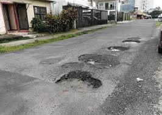
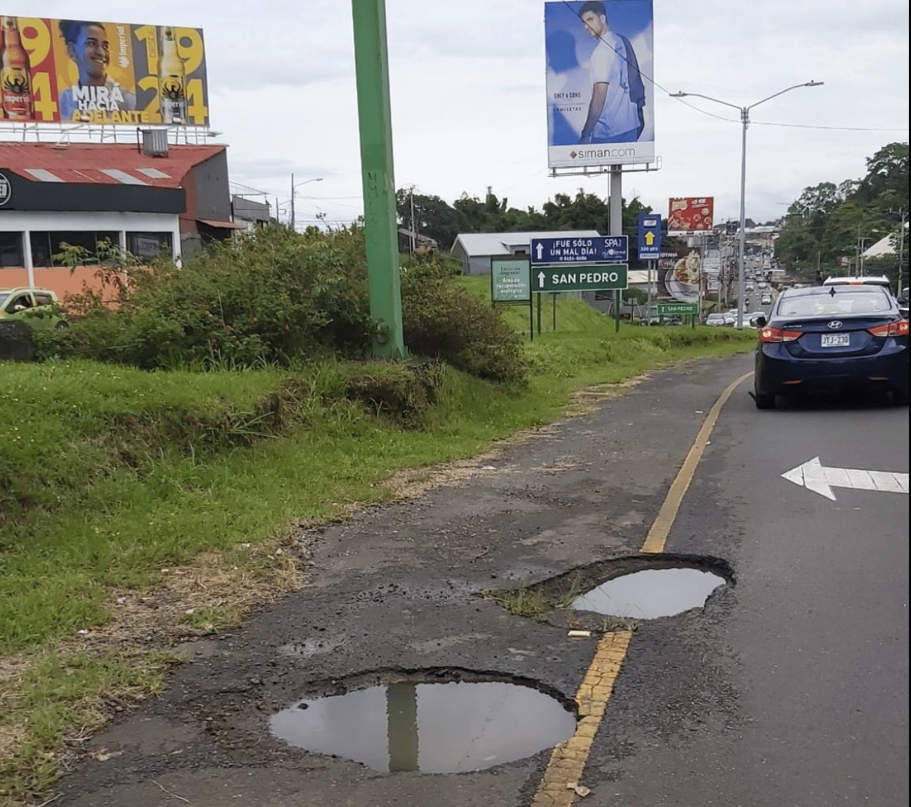
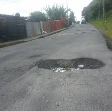

Bienvenidos al Sistema de Reporte de Calles
Reporta calles y carreteras en mal estado de manera fácil y rápida. Contribuye a mejorar las vías públicas de tu comunidad.



Nuestra Misión
Identificar y reportar huecos en las calles para mejorar la infraestructura vial de Costa Rica, facilitando la comunicación entre ciudadanos y las autoridades.
Nuestra Visión
Ser el canal principal para promover el mantenimiento de las carreteras, asegurando la seguridad vial y contribuyendo al desarrollo del país.
Colaboramos con:
 Ministerio de Obras Públicas y Transportes (MOPT)
Ministerio de Obras Públicas y Transportes (MOPT) Consejo Nacional de Vialidad (CONAVI)
Consejo Nacional de Vialidad (CONAVI) Municipalidades de Costa Rica
Municipalidades de Costa Rica